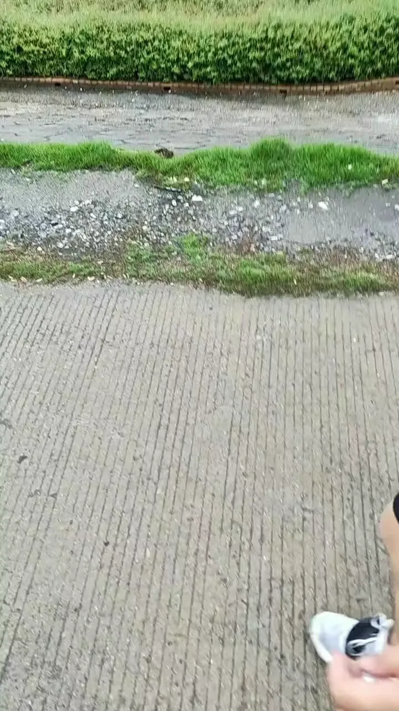

Journal · 2024-07-04
湖北省武汉市洪山区
这天的日记没有留下文字，只有一段视频。
七月初的夏天，有什么重要到只值得录下来、不值得写下来？我已经忘了。也许是某个无法用文字转述的瞬间。有些东西注定不属于语词，只属于影像和记忆之间的那个缝隙。
既然没有文字，就让画面自己说话吧。
No written words remain from this day—only a video.
Early July, high summer. What could have been so important that it was worth filming but not writing down? I've forgotten. Maybe it was a moment untranslatable into words. Some things are meant to live not in language, but in the gap between image and memory.
Since there are no words, let the images speak for themselves.
Aucun mot ne reste de ce jour—seulement une vidéo.
Début juillet, plein été. Qu'est-ce qui pouvait bien être assez important pour mériter d'être filmé mais pas écrit ? J'ai oublié. Peut-être un moment intraduisible en mots. Certaines choses sont faites pour vivre non dans la langue, mais dans l'interstice entre l'image et la mémoire.
Puisqu'il n'y a pas de mots, laissez les images parler d'elles-mêmes.
Von diesem Tag sind keine Worte geblieben—nur ein Video.
Anfang Juli, Hochsommer. Was konnte so wichtig sein, dass es des Filmens, aber nicht des Schreibens wert war? Ich habe es vergessen. Vielleicht ein Moment, der sich nicht in Worte uebersetzen laesst. Manche Dinge sind dazu bestimmt, nicht in der Sprache zu leben, sondern in der Luecke zwischen Bild und Erinnerung.
Da es keine Worte gibt, lasst die Bilder fuer sich selbst sprechen.
